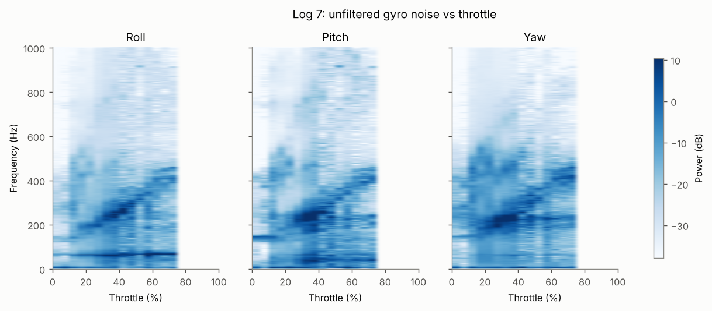
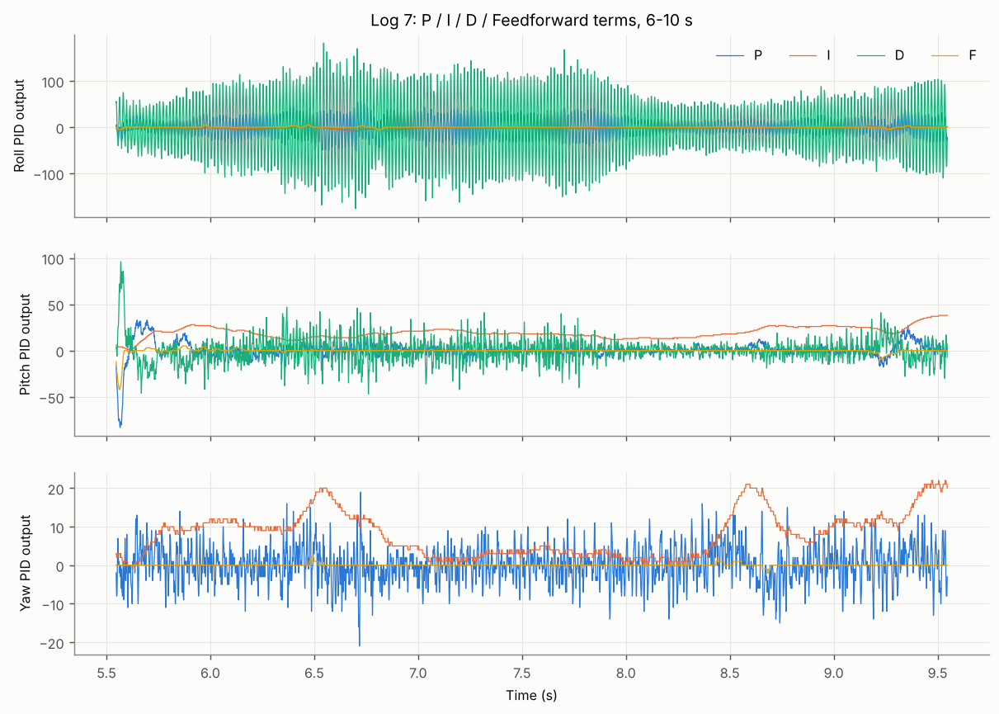
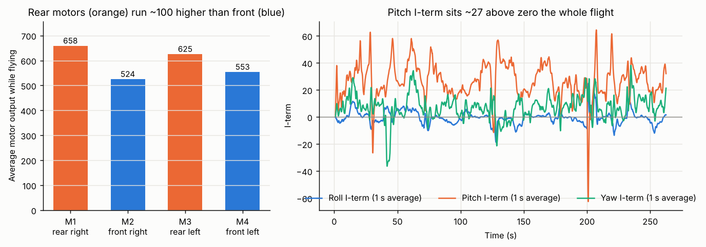
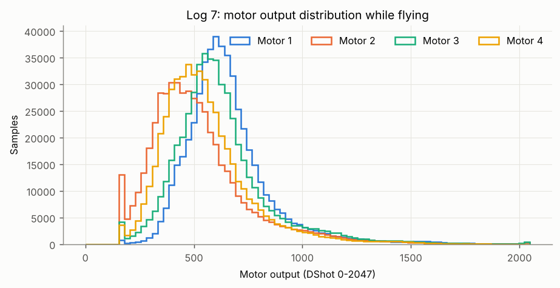
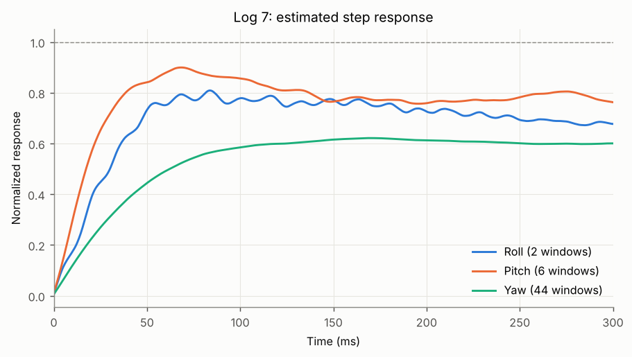
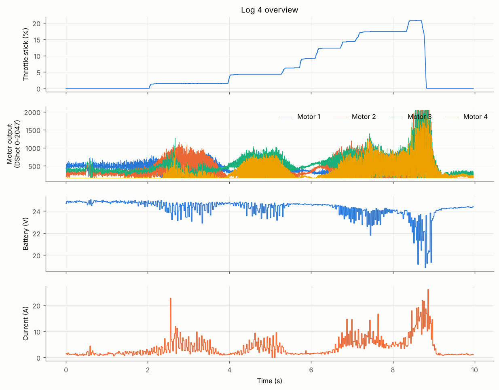

5 inch quad, Foxeer F722V2 flight controller, Betaflight 4.3.0, 6S. Analysis done in Python with my own scripts.
I hadn't looked at Blackbox on this quad in a while, so I pulled everything off the flash chip and went through it properly. Instead of just scrolling through Blackbox Explorer, I decoded the log in Python and made my own plots. That way every claim below points at a specific graph you can check.
Short version: the quad flies fine, but roll has a constant 62 Hz shake that the motors are fighting the whole flight, and the quad is tail heavy.
| Thing | Setting |
|---|---|
| Flight controller | Foxeer F722V2, Betaflight 4.3.0 |
| Battery | 6S |
| Motor protocol | DShot600 with bidirectional DShot, RPM filter on (3 harmonics) |
| Loop / log rate | 8 kHz loop, logging at 2 kHz |
| PIDs (P / I / D) | Roll 51 / 64 / 36, Pitch 56 / 71 / 39, Yaw 51 / 64 / 0 |
| Debug mode | GYRO_SCALED, which logs the gyro before filtering so I can compare raw vs filtered |
| Flight mode | Angle (self-level) the whole flight |
Seven logs. Five are just me arming on the bench. Log 4 is a 10 second hop where I walked the throttle up slowly. Log 7 is the real flight: 4 minutes 22 seconds, and it got cut off because the 16 MB chip filled up. Everything below is from log 7 unless I say otherwise.

The whole flight. Top: my throttle stick. Then the four motor outputs, battery voltage, and current. The thing to notice is the motor plot: all four motors are slamming between idle and full output constantly, even when I'm just cruising at 20% throttle. That's not normal, and it's what sent me looking for the oscillation below.
This is the big one. The roll axis oscillates at about 62 Hz, roughly ±20 deg/s, the entire flight, even with the stick centered. Pitch and yaw don't do it.
Evidence:
Orange is what I asked for, blue is what the quad actually did. Pitch and yaw sit right on the orange line. Roll is a thick zigzag around it. You can count the cycles: about 31 in half a second, so around 62 Hz.

Noise vs frequency. Orange is the raw gyro and blue is after Betaflight's filters. On roll there's a sharp spike at 62 Hz that's just as tall in blue as in orange, so the filters aren't touching it. That makes sense: my lowest D-term filter cutoff is 75 Hz, so 62 Hz gets through.

Same thing, split up by throttle. Darker means more noise. The diagonal band climbing from about 200 to 450 Hz is normal motor noise: spin the motors faster and the noise moves up. The roll shake is the dark flat line at 62 Hz. It doesn't move with throttle, so it isn't coming from the motors or props spinning.

What each part of the PID controller is outputting. On roll, the D-term (green) is swinging ±100 to 150 while P is tiny. So D is the part pushing the motors back and forth.
The short hop (log 4) has it too, at the same 62.6 Hz. Same frequency in two separate logs means it's something built into the quad, not a one-off.
What I think it is: one of two things. Either the roll loop itself is oscillating (roll D a bit too high), or something on the frame is loose and ringing at 62 Hz, like the stack, an arm screw, or the camera mount. The D-term would amplify either one. A constant frequency that doesn't change with throttle fits both, so the data alone can't tell them apart. The plan is to check the hardware first since that's free, then drop roll D from 36 to about 30 and log again. If the spike shrinks, it was tuning. If it doesn't move, it's mechanical.
The two back motors work harder than the two front ones for the whole flight.
Evidence:

Left: average output of each motor while flying. In Betaflight's default motor order, M1 and M3 are the rear motors, and they average about 100 higher than the front pair. I also split the flight into quarters and the gap shows up in every quarter, so it isn't one maneuver skewing it. Right: the I-term is the part of the controller that builds up to cancel a steady push. Roll stays near zero (left and right sides are balanced). Pitch sits around +27 for basically the whole flight, which means the quad is always correcting for one end being heavier. That's the controller holding up the back.
Correction: my first read of the motor numbers was "a bent prop on one diagonal." That was wrong. M1 and M3 aren't a diagonal pair, they're both in the back. A front/back split like this points to balance: the battery or GoPro sitting too far back. A bent prop would show up as extra vibration on one motor at that motor's RPM. This log can't show that because per-motor RPM wasn't logged, so I can't rule a bent prop in or out from this data. Yaw I-term does sit a little above zero (about +8), which could be a slightly tilted motor or a prop, but it's small enough that I wouldn't call it.
Fix: move the battery forward and re-log. If the pitch I-term centers near zero and the front and rear motor averages come together, that confirms it. (This all assumes I didn't remap the motor order. If I did, M1 to M4 positions change.)

Same throttle plot as above, but after filtering. The 200 to 450 Hz motor band is mostly gone. In the spectrum graph the filtered line sits 15 to 25 dB under the raw one across that range. The RPM filter and dynamic notch are doing their job, so I'm not touching the filters.
Battery went from 4.10 V per cell at rest to 3.66 V per cell after about 4 minutes, and sagged to 3.13 V per cell on punch-outs (voltage plot in the overview). That's a real chunk of the pack. But the current sensor says only about 250 mAh was used, which is way too low for that much voltage drop. So the current-sensor scale is probably off, and my OSD mAh number is lying to me. Fix: fly a pack, see how many mAh the charger puts back in, and set the scale so the two match.
Setpoint vs gyro for the whole flight. Same story as the zoom: the roll band is thick the whole way through, while pitch and yaw follow closely.

How much time each motor spends at each output level. The spread is wide for a mostly gentle flight, which is the oscillation again.

Step response: if I command a sudden rate change, how fast and cleanly does the quad get there? I'm not reading much into this one. It needs sharp stick inputs, and I flew this in Angle mode pretty gently, so it only found 2 usable roll moments and 6 for pitch. To get a real step response, I'll fly a pack in Acro with crisp flips and rolls.

Log 4, the short hop. I walked the throttle up to about 21%, and the motors were already thrashing at low throttle.